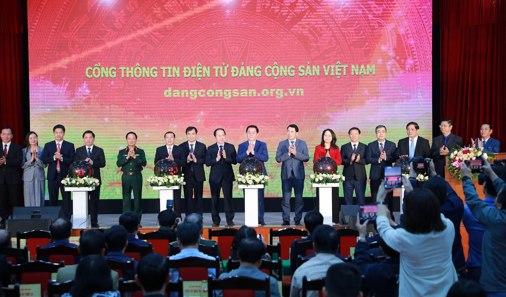

Khai trương Cổng thông tin điện tử Đảng cộng sản Việt Nam
Sáng 29/3, Ban Tuyên giáo Trung ương khai trương Cổng thông tin điện tử Đảng Cộng sản Việt Nam tại địa chỉ: www.dangcongsan.org.vn.
Cổng gồm ba khối nội dung lớn. Đầu tiên là khối tin tức, cập nhật hoạt động của lãnh đạo Đảng, Nhà nước và xây dựng Đảng. Chuyên mục lãnh đạo Đảng, Nhà nước gồm 5 chuyên trang Tổng bí thư, Chủ tịch nước, Thủ tướng, Chủ tịch Quốc hội, Thường trực Ban Bí thư. Ngoài đăng tải tin tức, các chuyên trang còn cung cấp thông tin về tiểu sử, bài phát biểu, bài viết của lãnh đạo Đảng, Nhà nước.
Khối thông tin dữ liệu gồm hệ thống văn bản mới như chỉ thị, nghị quyết, kết luận, thông báo của Ban Chấp hành Trung ương, Bộ Chính trị, Ban Bí thư. Hệ thống tư liệu văn kiện Đảng; các tác phẩm của Các Mác, Ăng-ghen, Lê-nin và Chủ tịch Hồ Chí Minh được số hóa. Hệ thống thông tin tích hợp gồm chuyên mục Cơ quan Đảng Trung ương; Tổ chức chính trị - xã hội; Tỉnh, thành ủy.
Khối các ứng dụng với chuyên mục hỏi đáp trực tuyến sẽ tiếp nhận, trả lời câu hỏi của cán bộ, đảng viên, bạn đọc về công tác xây dựng Đảng và lĩnh vực quan trọng được xã hội quan tâm. Chuyên mục Đối thoại trực tuyến đăng trả lời phỏng vấn trực tuyến hoặc phát trực tiếp đối thoại, giao lưu của lãnh đạo, quản lý, chuyên gia, nhà khoa học. Ngoài ra, khối còn có chuyên mục Góp ý xây dựng Đảng; Diễn đàn xây dựng Đảng.

Ông Trần Doãn Tiến, Tổng biên tập Báo điện tử Đảng Cộng sản Việt Nam, cho biết Cổng đáp ứng yêu cầu cơ bản của cán bộ, đảng viên, người dân. Hệ thống thông tin được tổ chức khoa học. Các tiện ích giao tiếp điện tử, diễn đàn góp ý xây dựng Đảng và đối thoại trực tuyến trên Cổng sẽ góp phần tạo đột phá về chuyển đổi số, gắn bó hiệu quả giữa Đảng với nhân dân và giữa nhân dân với Đảng.
Trưởng Ban Tuyên giáo Trung ương Nguyễn Trọng Nghĩa nhấn mạnh, sự kiện hôm nay đánh dấu ra đời kênh thông tin chính thống chủ lực trong tuyên truyền chủ trương, đường lối của Đảng trên internet. Đây là cầu nối trao đổi thông tin hai chiều giữa Đảng, Nhà nước và nhân dân.
Sau lễ khai trương, ông Nghĩa yêu cầu các cơ quan hoàn thiện cơ sở dữ liệu để vận hành Cổng thông suốt, an toàn; thông tin được thẩm định, biên tập chặt chẽ, không xảy ra sai sót.
"Tuy làm chặt chẽ nhưng phải chủ động, kịp thời, luôn đi trước chứ không thể đi sau mạng xã hội; không để trống thông tin hay nội dung cần định hướng, nhất là những vấn đề nhân dân quan tâm", ông Nghĩa nói.